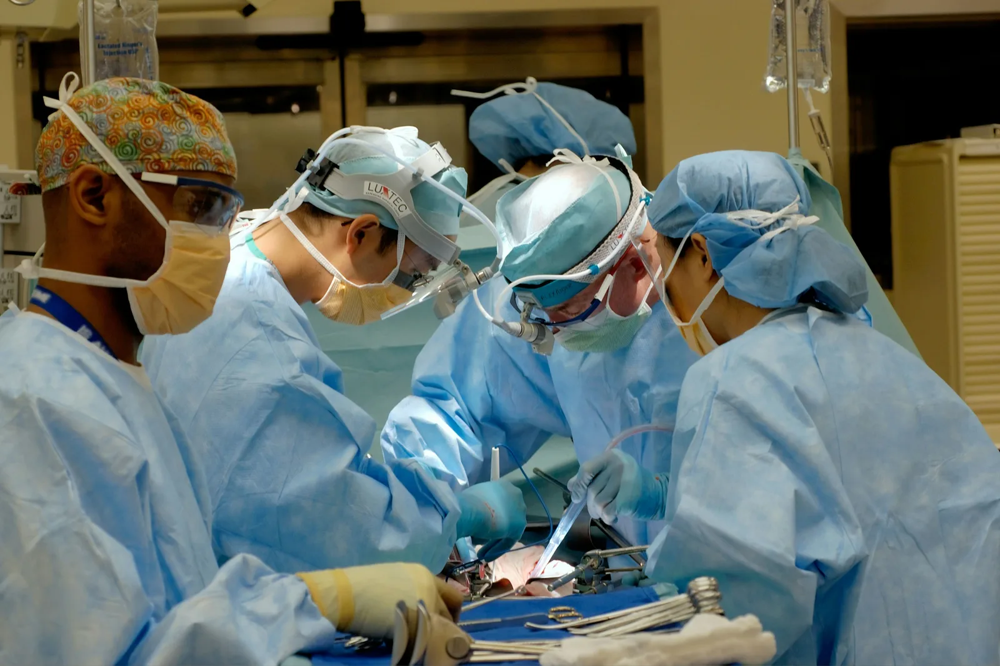
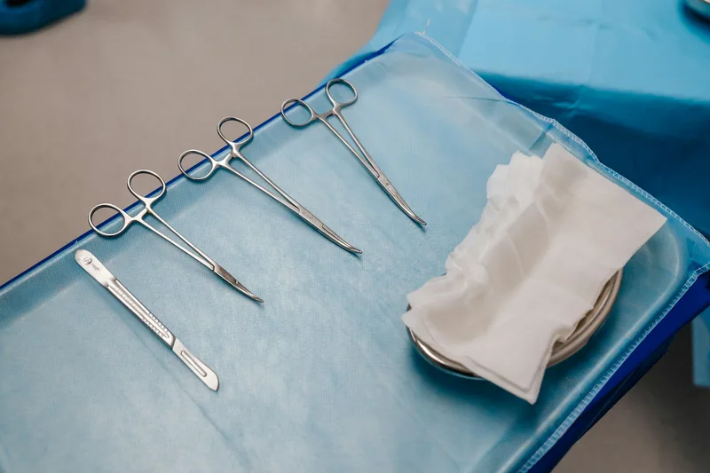

Board-Certified Surgeons & Clinical Trichologists
Our medical faculty is led by internationally accredited hair restoration surgeons and trichologists. We uphold strict European medical guidelines, operate a maximum of one surgery per team daily, and never delegate key incisions to technicians.

- 5Senior Medical Faculty
- 100%Direct Surgeon Care
- ISHRSGlobal Society Members
- 0%Sales Commission Pay
Dr. Elif Aydan, MD, ISHRS
With over 15 years in reconstructive microsurgery, Dr. Aydan is renowned for her peer-reviewed research on hypothermic graft preservation and natural temporal point reconstruction.
Our Core Surgical and Trichology Faculty
Each physician brings focused expertise in specific surgical domains, from Choi pen high-density crown packing to complex cellular trichology.
Dr. Marco Feld, MD
Specialist in dense-packing mega sessions and secondary corrective hair reconstructions for unnatural previous transplants.
Dr. Sena Yildiz, PhD, RN
Doctorate in Clinical Cellular Biology. Oversees atraumatic micro-punch harvesting, chilled solutions, and graft survival rate.
Dr. Priya Nair, MD
Board-certified dermatologist specializing in female diffuse hair thinning, inflammatory scalp conditions, and exosome PRP therapies.
Dr. Kenji Sato, MD
Choi implanter pen authority specializing in unshaven DHI hair transplants, beard reshaping, and acute-angle eyebrow grafting.
Our Six Clinical Operating Standards
The institutional checks and medical governance that guarantee patient safety, predictable hair densities, and lifelong follicular health.
You consult directly with medical doctors, not commission-driven salespeople. We decline surgery for approximately 15% of candidates who do not possess stable donor characteristics.
All operating theaters meet ISO-Class 5 medical cleanroom specifications with continuous positive pressure HEPA filtration, minimizing infection risk to near zero.
Extracted follicles are maintained in chilled HypoThermosol holding media at 4°C, sustaining cellular respiration and cellular membrane stability during the entire out-of-body window.
Every patient receives a signed clinical certificate guaranteeing graft survival. Scheduled post-op monitoring at months 1, 3, 6, 9, and 12 ensures complete healing and satisfaction.
Our surgeons operate on no more than two patients a day, so the lead surgeon personally designs every hairline and supervises extraction and implantation from start to finish.
Graft counts, survival rates and 12-month photographs are reviewed by an external ISHRS-member panel each year, and the results are published to patients without edits.
Connect Directly with Our Lead Hair Restoration Surgeons
Schedule an honest photographic assessment or in-person consultation in our Istanbul clinic with no sales pressure.